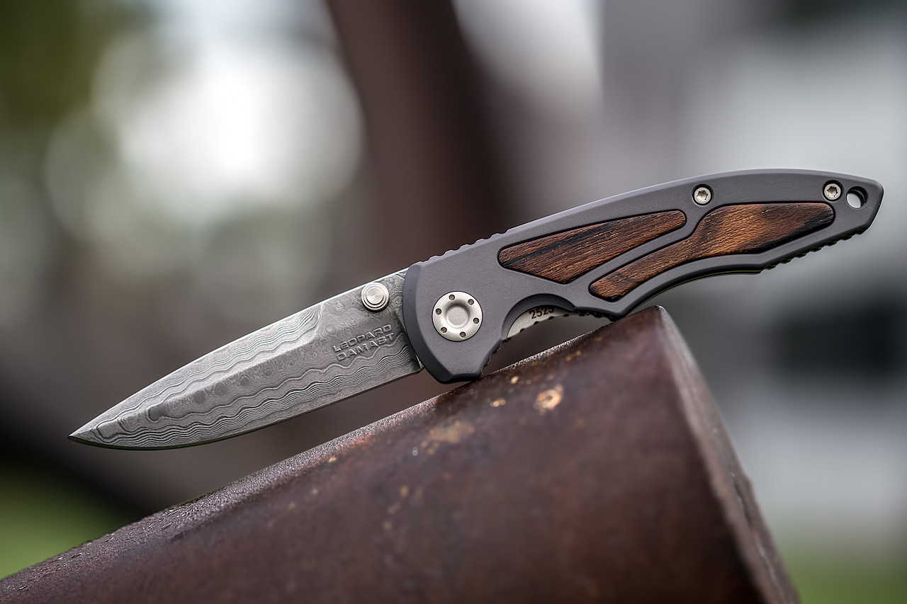
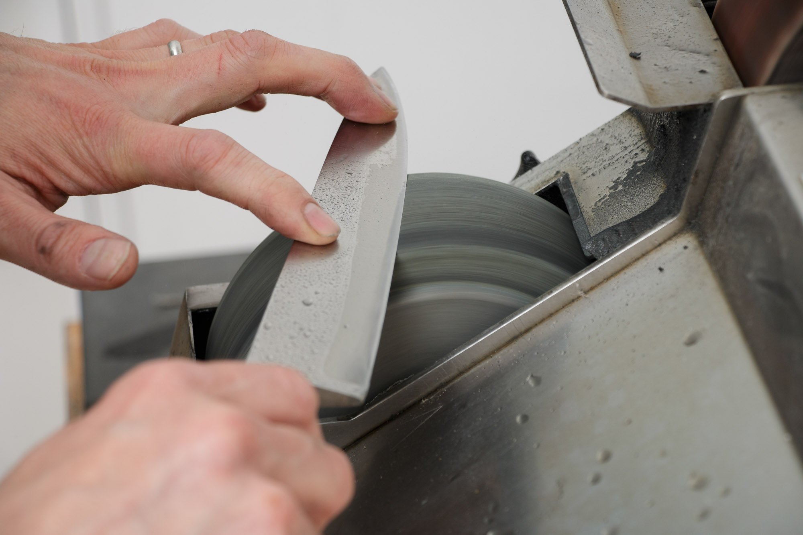
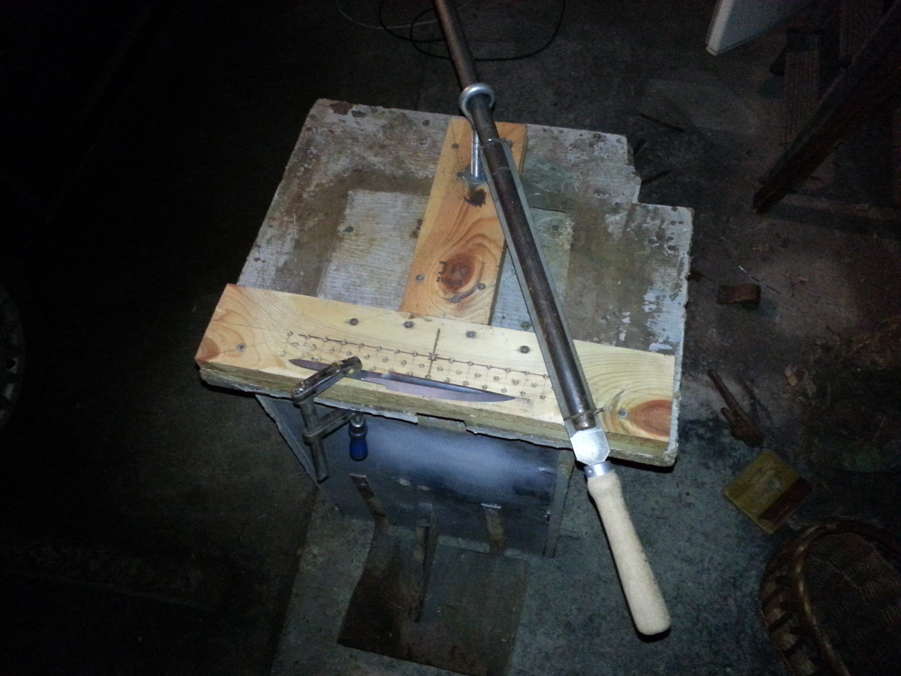
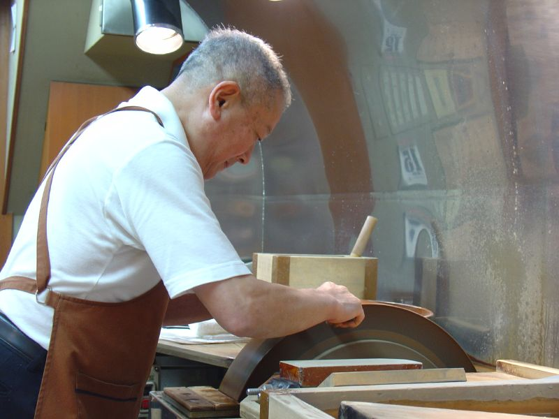

The Five Disciplines of Our Workshop
How raw sintered alloy billets become precise culinary cutting instruments.
Cryogenic Metallurgy & Heat Treat
A knife's performance is sealed in the furnace. We heat alloy billets to 1,050°C to dissolve chromium and carbon into solid austenitic solution, followed by a rapid oil quench and sub-zero liquid nitrogen bath at -196°C.
This cryogenic phase converts retained austenite into ultra-hard martensite, refining crystalline carbide grain size. The resulting steel achieves 61.5 HRC with remarkable micro-toughness.

Flood-Cooled Convex Grinding
Grinding without coolant causes friction temperatures exceeding 300°C within seconds, destroying edge temper. Our primary blade bevels are shaped exclusively on rotating ceramic wheels bathed in continuous cold water cascades.
We grind a Hamaguri convex geometry—a delicate clamshell curve tapering from a 2.2mm spine down to 0.15mm behind the cutting apex. This introduces air pockets that release starchy vegetables without suction drag.

Ergonomic Wood Bedding & Contouring
Kitchen knives endure daily hand sweat, animal fats, and ambient kitchen humidity. We craft handles from kiln-dried American Walnut, Teak, and African Blackwood.
Handles are vacuum-impregnated with non-toxic botanical oils and pinned with solid brass rivets. The wood is hand-sanded to 1,200 grit and radiused flush with bolsters to eliminate voids where food debris could collect.

Progressive Hand Water-Stone Honing
The final cutting edge is never created by high-speed machines. Experienced blade artisans sharpen each knife across sequential Japanese water whetstones.
Beginning on a #1,000 stone to form an exact 15° apex, moving to #3,000 to refine scratch grooves, and culminating on a #6,000 mirror stone followed by horsehide stropping charged with 0.5-micron diamond compound.

Microscopic Apex Verification
No knife leaves our studio without passing a rigorous three-tier inspection protocol:
- 40x Loupe Inspection: Verifies complete burr removal along the entire apex length.
- Laser Spine Check: Confirms straightness from heel to tip with zero lateral deviation.
- Culinary Paper & Tension Cut: Must cleanly shave free-hanging paper and slice ripe tomato skin without applying downward pressure.

Designed Exclusively for Food Preparation
We do not manufacture tactical blades or survival gear. Every angle, taper, and balance point we engineer is dedicated entirely to the sensory joy of cooking.
Explore The Knives